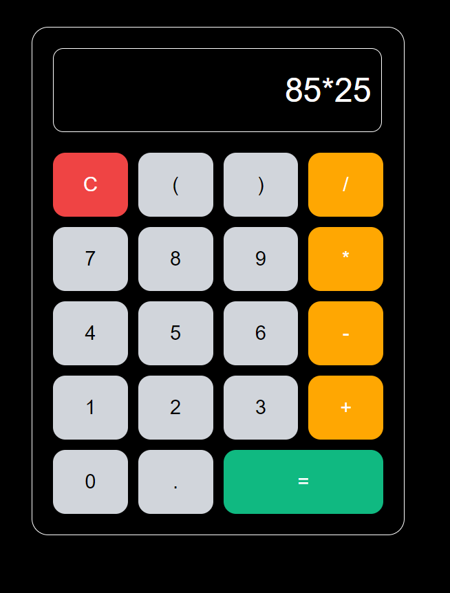
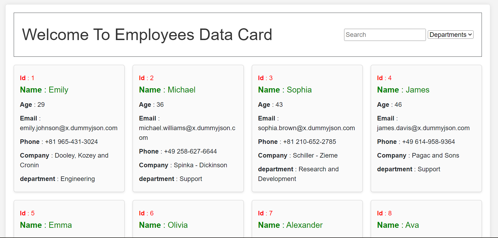
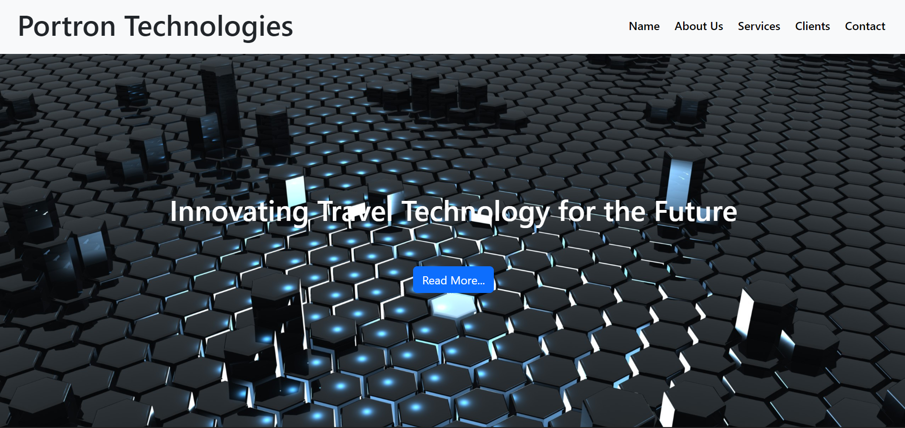
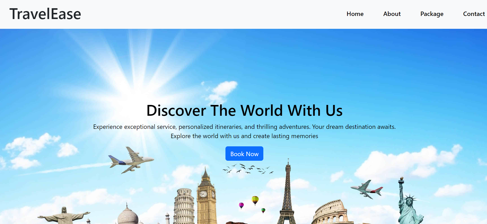
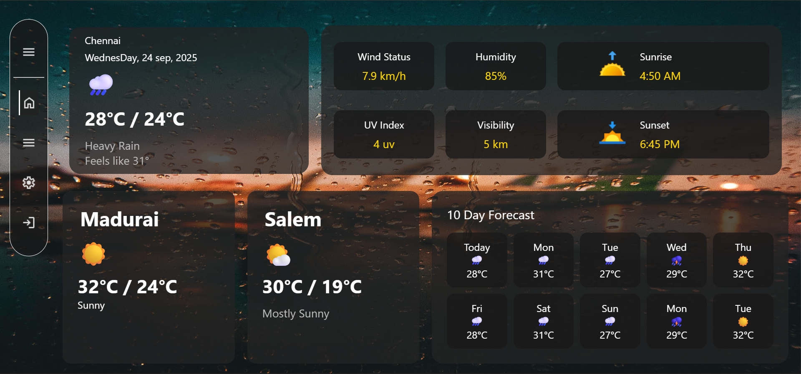
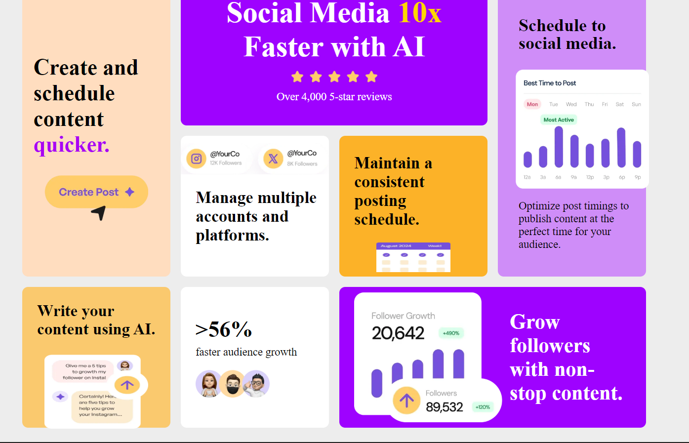
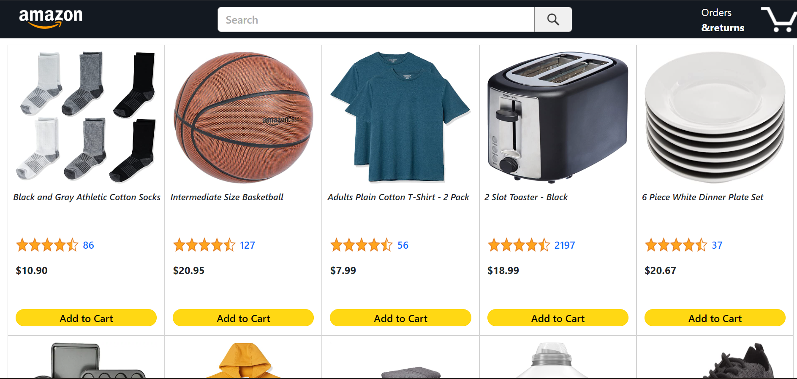

Projects
Calculator

I built a fully functional calculator using HTML, CSS, and JavaScript, featuring a clean interface with number keys, operators, and real-time input handling. Each button triggers JavaScript functions such as appendValue(), clearDisplay(), and calculate() to update the display and perform arithmetic operations. The project strengthened my understanding of DOM manipulation, event handling, and interactive UI design. It also demonstrates my ability to convert logic into a smooth user experience with responsive styling and clean code structure.
Fetching Employee Data's From Database

Built a dynamic Employee Data Card application using HTML, CSS, Bootstrap, and JavaScript, where employee details are fetched and displayed as neatly structured profile cards. The page includes features like live search, department-based filtering, and responsive card layouts to ensure a smooth user experience on all screen sizes. JavaScript handles data rendering, DOM manipulation, and filtering logic to update the UI instantly based on user actions. This project strengthened my skills in API handling, dynamic UI generation, and building clean, user-friendly data representation interfaces.
Portron Technology

Developed a sleek and responsive landing page for a fictional tech company using HTML, CSS, and Bootstrap. The design features a full-width hero banner with a bold headline, smooth layout transitions, and a clear navigation bar linking to sections like About, Services, Clients, and Contact. Focused on creating a visually strong first impression with a futuristic background, clean typography, and user-friendly structure. This project highlights my ability to build modern marketing pages, implement responsive UI components, and design layouts suitable for real-world business websites.
Travel Ease - Traveling Agency

Created a visually appealing and responsive travel landing page using HTML, CSS, and Bootstrap, designed to showcase destinations and encourage users to explore travel packages. The hero section features an engaging background, clear headline, and a strong call-to-action button. The layout includes smooth navigation links (Home, About, Packages, Contact) and well-structured sections to highlight services effectively. This project demonstrates my ability to build modern promotional websites with clean UI design, responsive layouts, and user-focused content presentation.
Weather Application UI

Developed an advanced weather dashboard using HTML, CSS, JavaScript, and API integration to display real-time weather conditions for multiple cities. The interface includes current temperature, humidity, wind speed, UV index, visibility, sunrise/sunset times, and a 10-day forecast. Designed with a modern glass-morphism UI and responsive layout, the dashboard provides a smooth user experience with neatly organized weather cards and an interactive sidebar menu. This project strengthened my skills in API handling, dynamic DOM updates, and creating visually rich, data-driven web applications.
Modern Testimonial Cards UI Design

I built a fully responsive testimonial grid section inspired by a Frontend Mentor challenge using HTML and CSS. The layout features multiple testimonial cards arranged in a visually balanced grid with unique background themes, clean typography, and clear user hierarchy. Each card highlights a graduate’s review with profile images, titles, and detailed feedback. I focused on creating a smooth, modern UI with consistent spacing, accessible contrast, and a well-structured layout that adapts perfectly across devices. This project improved my understanding of CSS grid, component-based layouts, and responsive design principles.
Responsive Bento Grid Social Media Dashboard

I built a modern, responsive bento-grid layout inspired by a Frontend Mentor challenge, showcasing various social media marketing features in a clean and visually engaging design. The project uses HTML and CSS to create a multi-section grid that highlights analytics, scheduling tools, AI-powered content creation, and audience growth statistics. Each block is styled with unique colors, icons, and typography to maintain a smooth visual flow while staying perfectly responsive across devices. This project strengthened my skills in CSS Grid, layout structuring, and building modern UI components with a professional look.
Clipboard Landing Page – Responsive UI Design

I created a modern and responsive landing page for a Clipboard application using HTML and CSS. The design includes a clean hero section, feature descriptions, download buttons, and a visually appealing layout that highlights the app’s core functionalities such as cloud syncing, quick search, and snippet management. I focused on writing clean code, maintaining consistent spacing, and ensuring a smooth user experience across different screen sizes. This project helped me improve my landing page structuring, typography handling, and responsive design skills.
E Commerce Website UI Design

I built an Amazon-style product listing page using HTML, CSS, and JavaScript to practice e-commerce UI design. The page includes a responsive navigation bar, search functionality placeholder, product cards with images, ratings, pricing, and “Add to Cart” buttons. I focused on replicating Amazon’s layout style with clean spacing, consistent typography, and grid-based product alignment. This project helped me improve my skills in structuring large UI sections, handling product components, and creating a realistic shopping interface.
Fylo Data Storage Component – Responsive UI Design

I built a responsive data storage component inspired by a Frontend Mentor challenge, using HTML and CSS to design a clean and modern user interface. The layout displays storage usage with a dynamic-styled progress bar, a floating “GB Left” indicator, and a neatly arranged card showing storage-related icons and branding. I focused on creating smooth visuals with gradients, rounded containers, balanced spacing, and a dark theme aesthetic. This project enhanced my understanding of component-based layouts, progress bar styling, and responsive UI design principles.